Getting Started with C2000 Devices#
The objective of this lab is to get started with TI Code Composer Studio development environment and run a basic example to toggle LEDs. The lab exercise demonstrates how to import a project from a C2000ware DriverLib example, rename the project, and modify the code. It also illustrates the minimum steps required to toggle LEDs, compile the code, build the output, and run the generated-out file on target EVM (LaunchPad or controlCARD).
Refer to our Getting Started with CCS and C2000Ware video for a demonstation on how to utilize CCS and C2000Ware.
Solution#
All solutions for C2000 Academy are located in the directory: <c2000ware_install_path>/training/device/<device_name>.
Initial Setup#
Hardware Setup#
The lab exercise in this workshop is targeted for LAUNCHXL and/or controlCARD of C2000 devices.
LAUNCHXL |
controlCARD |
|---|---|
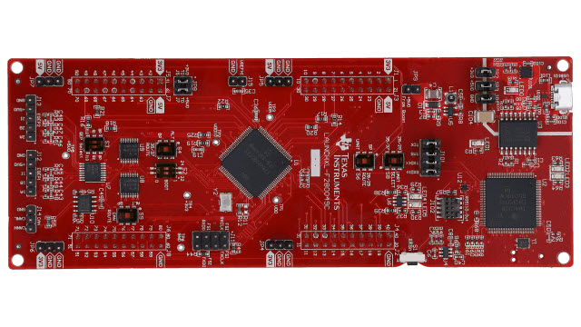 |
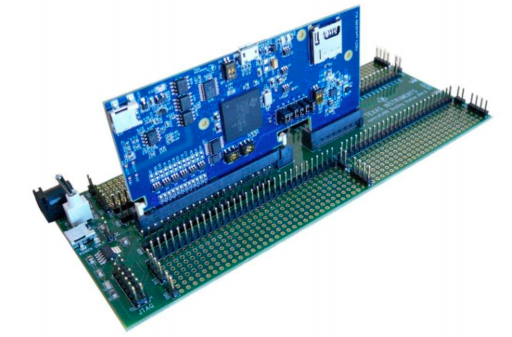 |
Using the supplied USB cable, connect the USB Standard Type-A connector into the computer USB port and the USB Micro or Mini Type-B connector into the board. This will power the board using the power supplied by the computer USB port. Additionally, this USB port will provide the JTAG communication link between the device and Code Composer Studio.
Software Setup#
The following software and tools will be required for lab exercise for C2000 real-time MCUs
TI Code Composer Studio : Integrated Development Environment for development of code for C2000 family of devices
C2000Ware SDK : Low level drivers, highly optimized libraries, examples to get started with C2000 family of devices.
Start Code Composer Development Environment#
Open a Workspace#
Start Code Composer Studio (CCS) by double clicking the icon on the desktop or selecting it from the Windows Start menu. When CCS loads, a dialog box will prompt you for the location of a workspace folder. Use the default location for the workspace and click ‘Launch’. This folder contains all CCS custom settings, which includes project settings and views when CCS is closed so that the same projects and settings will be available when CCS is opened again. The workspace is saved automatically when CCS is closed.
The first time CCS opens an introduction page appears. Close the page by clicking the ‘X’ on the ‘Getting Started’ tab. You should now have an empty workbench. The term ‘workbench’ refers to the desktop development environment. Maximize CCS to fill your screen. The workbench will open in the ‘CCS Edit’ perspective view. Notice the ‘CCS Edit’ icon in the upper right-hand corner. A perspective defines the initial layout views of the workbench windows, toolbars, and menus which are appropriate for a specific type of task (i.e., code development or debugging). This minimizes clutter to the user interface. The ‘CCS Edit’ perspective is used to create or build C/C++ projects. A CCS Debug perspective view will automatically be enabled when the debug session is started. This perspective is used for debugging C/C++ projects.
Import Empty Project from C2000Ware#
Import empty project from C2000Ware DriverLib examples. Go to CCS menu File → Import…
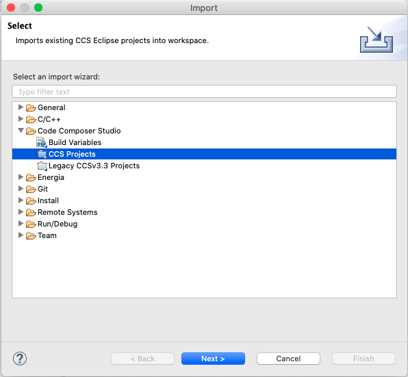
Click ‘Browse…’ button
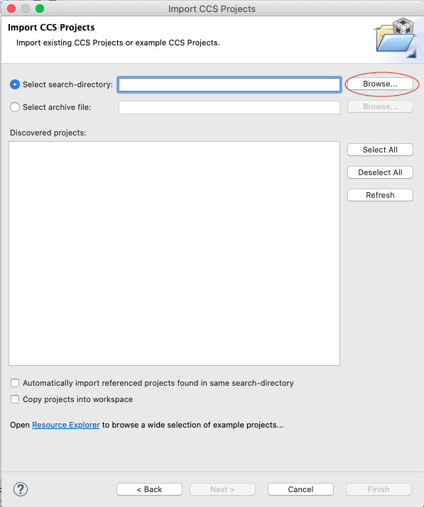
Go to
[C2000ware Install_dir]/driverlib/[device]/examples/empty_projects. The default install folder in Windows isC:/ti/C2000Ware_X_XX_00_00. For correct device name, check your board LaunchPad, or controlCARD. For dual core devices, look in the[C2000Ware Install_dir]/driverlib/[device]/cpu1/empty_projectsdirectory.
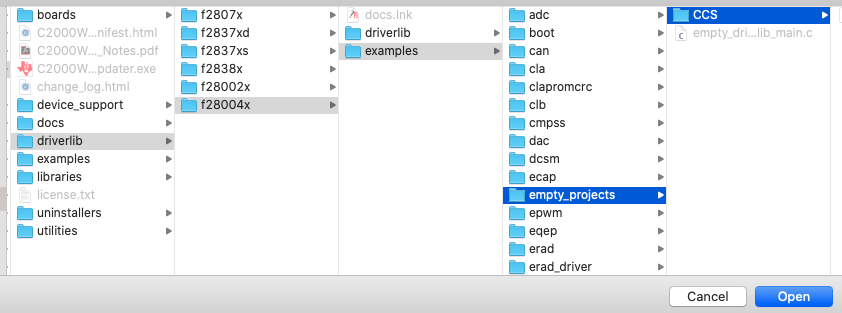
Click ‘Open’ button, and this should list the project like below.
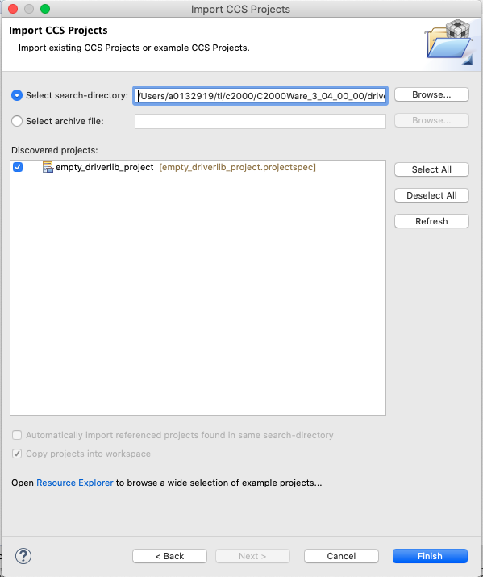
Click ‘Finish’ button.
Right-click on the project in Project Explorer pane. Click ‘Rename’ and rename the project to a name that you would like. For this example we will use ‘ex’. If you have multiple projects in your workspace related to the same thing (ex. labs or software examples) you can add a prefix to your project’s title with something so that all projects are grouped together.
Now click ‘Down Arrow’ located to the left the imported project to expand it and select empty_projects_main.c. Right-click on the file and select ‘Rename’ to rename the file to something you would like. For this example we will use ‘ex_main.c’.
Open the ex_main.c by double-clicking the file. Now the workspace should look like below
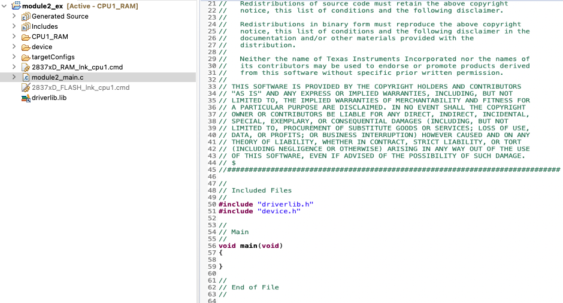
If you are working with LaunchPad, then select CPU1_LAUNCHXL_RAM build configuration from the menu. Right-click on project for the menu.
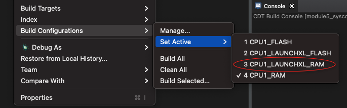
When debugging, make sure correct target configuration file (.ccxml) is active for your board.
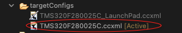
Right-click the project and select ‘Rebuild’. It should build with 0 errors in ‘Console Output’ window.
Project Build Options#
There are numerous build options in the project. Most default option settings are sufficient for getting started. We will inspect a couple of the default options at this time. Right-click on ex in the Project Explorer window and select Properties or click: Project → Properties
A ‘Properties’ window will open and in the section on the left under ‘Build’ be sure that the ‘C2000 Compiler’ and ‘C2000 Linker’ options are visible. Next, under ‘C2000 Linker’ select the ‘Basic Options’. Notice that .out and .map files are being specified. The .out file is the executable code that will be loaded into the MCU. The .map file will contain a linker report showing memory usage and section addresses in memory. Also notice the stack size.
Under “C2000 Compiler” select the “Processor Options”. Notice the large memory model and unified memory boxes are checked. Next, notice the “Specify CLA support” is set to ‘cla1’ or ‘cla2’, the “Specify floating point support” is set to fpu32, the ‘Specify TMU support’ is set to TMU0, and the ‘Specify VCU support’ is set to ‘vcu0’ or ‘vcu1’. Select ‘Apply and Close’ to close the Properties window. Refer to C2000 Peripheral Guide for details on types of CLA and VCU supported on your device.
Linker Command File#
Open and inspect
[device]_generic_ram_link.cmdby double clicking on the filename in the ‘Project Explorer’ window. Notice that the Memory{} declaration describes the system memory. Notice the blocks of memory that have been placed in the.textsection, this is where the program data resides. Additionally, note the blocks of memory that have been assigned to other sections such as.ebss,.cinit, and.stack. These sections are needed for the C compiler and contain various data memory.In the Sections{} area notice that the sections defined on the slide have been “linked” into the appropriate memories. Also, notice that a section called ‘.reset’ has been allocated. The ‘.reset’ section is part of the rts2800_fpu32.lib and is not needed. By putting the TYPE = DSECT modifier after its allocation the linker will ignore this section and not allocate it. Close the inspected file.
Build and Load the Project#
Two buttons on the horizontal toolbar control code generation. Hover your mouse over each button as you read the following descriptions:
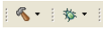
Build |
Name |
Description |
|---|---|---|
1 |
Build |
Full build and link of all source files |
2 |
Debug |
Automatically build, link, load and launch debug-session |
Setup Target Configuration#
Option 1: Using ‘Active’ target configuration#
In ‘Project Explorer’ open [project name] → targetConfigs and make sure the TMS320F28XXXX.ccxml is set ‘Active’. Please see below for reference.
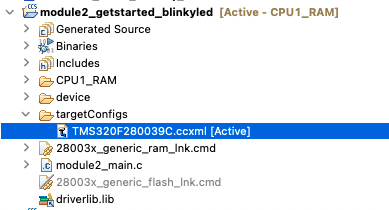
Start debugging the code by CCS menu Run → Debug. It will automatically launch target configuration, connect the CPU, and load the ‘.out’ file.
Option 2: Manually launching target configuration#
Open the target configuration dialog box. On the menu bar click: View → Target Configurations and click the sign (‘+’ or ‘>’) to the left of “projects”. Notice that the [device_board].ccxml file is listed. Select the .ccxml file, right-click and select ‘Launch Selected Configuration’
Select C28xx_CPU1 and right-click, and select ‘Connect Target’
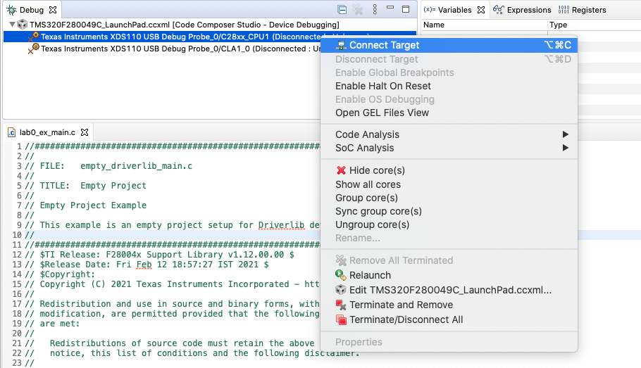
Go to CCS menu Run → Load → Load Program and click: ‘Browse project…’ button and select ex → CPU1_RAM or LAUNCHXL_CPU1_RAM → ex.out and click ‘Ok’ button
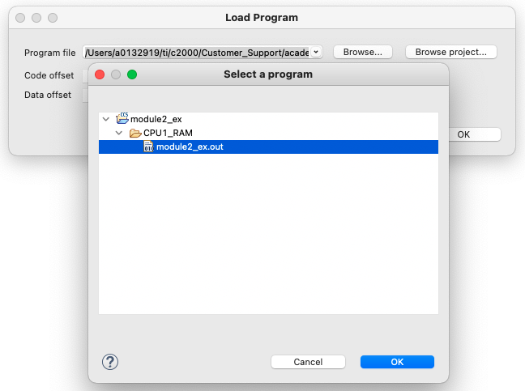
Add Code to Toggle LEDs#
The minimum steps required to configure the target and toggle LEDs are listed below. For this lab exercise we will use C2000Ware DriverLib API. Open main.c file by double-clicking the file in ‘Project Explorer’ panel.
Copy following code in main() function to initialize the device clock and peripheral for the device.
// Device Initialization
Device_init();
Copy following code to initialize GPIO pin and configure the GPIO pin as push-pull output
// Initialize GPIO and configure the GPIO pin as a push-pull output
Device_initGPIO();
GPIO_setPadConfig(DEVICE_GPIO_PIN_LED1, GPIO_PIN_TYPE_STD);
GPIO_setDirectionMode(DEVICE_GPIO_PIN_LED1, GPIO_DIR_MODE_OUT);
Now configure interrupt controller and interrupt service routines by copying following code.
// Initialize PIE and clear PIE registers. Disables CPU interrupts.
Interrupt_initModule();
// Initialize the PIE vector table
Interrupt_initVectorTable();
// Enable Global Interrupt (INTM) and realtime interrupt (DBGM)
EINT;
ERTM;
Copy code below for infinite loop to toggle GPIO with some delay. The frequency of toggle can be controlled through delay parameter.
// Loop Forever
for(;;)
{
// Turn on LED
GPIO_writePin(DEVICE_GPIO_PIN_LED1, 0);
// Delay for a bit.
DEVICE_DELAY_US(500000);
// Turn off LED
GPIO_writePin(DEVICE_GPIO_PIN_LED1, 1);
// Delay for a bit.
DEVICE_DELAY_US(500000);
}
Right-click project and rebuild the project. Select CCS menu Run → Debug to load and run the code on target.
Terminate the debug session and close the project. This concludes the lab assignment.
Full Solution#
The full solution to this lab exercise is included as part of the C2000Ware
SDK. Import the project from
<c2000ware_install_path>/training/device/<device_name>/getting_started/lab_binkyled_driverlib.
Setting CCS for graph#
CCS perspective is a collection of windows, layouts, views, and toolbars in the CCS workspace
window. By default, CCS opens in CCS Edit perspective and when you are debugging, it automatically
switches to CCS Debug perspective.
Lab exercises of many subsequent modules need CCS graphing tools to view the plots and validate the results.
If you are using CCS debug perspective, then CCS menu Tools → Graph is available by-default and
no configuration is required.
If you are using CCS Simple perspective, then CCS menu Tools → Graph is not available by-default.
You can customize the CCS Simple perspective to add graphing tools. Steps required as listed below:
Open CCS menu Window → Perspective → Customize Perspective…
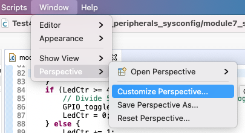
Open tab
Menu Availabilityand checkTools
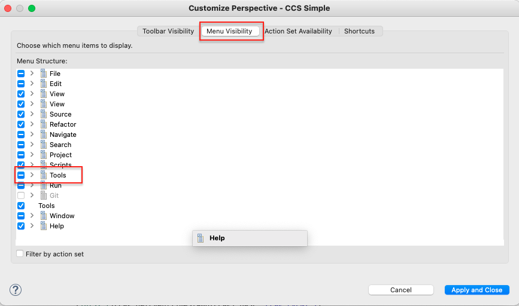
Open tab
Action Set Availabilityand checkGraph
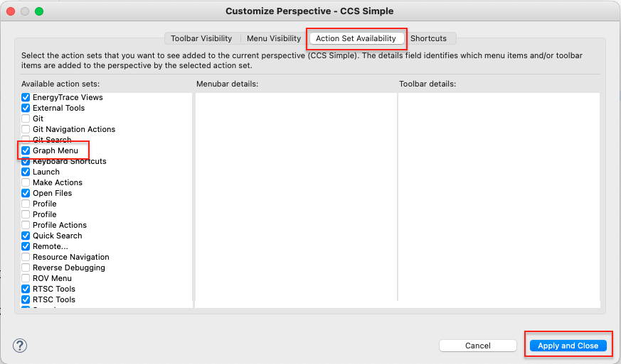
Press
Apply and Closebutton. The tools and graph menu will be available now. This is only one-time configuration and CCS will remember the configuration for the workspace even after closing it.
Feedback
Please provide any feedback you may have about the content within C2000 Academy to: c2000_academy_feedback@list.ti.com